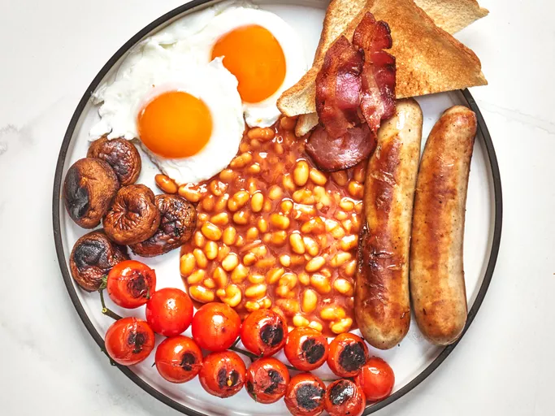

Home
Full English Breakfast

Ingredients
- 1 (8 ounce) can baked beans
- 2 tablespoons ketchup
- 1 tablespoon HP sauce
- 3 slices bacon
- 2 bangers (British sausages)
- 1 bunch cherry tomatoes on the vine
- 5 whole cremini mushrooms
- 2 large eggs
Steps
- Place beans in a small saucepan over medium-low heat. Add ketchup and HP sauce, and heat until warmed through, about 5 minutes.
- Heat a large skillet over medium heat, and add bacon and sausages. Cook until sausage is browned and bacon is cooked to your taste, about 10 minutes. Remove from the pan and set aside.
- Add tomatoes and mushrooms to the skillet, and sear in bacon fat for 2 minutes; remove from the pan.
- Add 1 cup water to the pan, crack in eggs, and simmer until whites are opaque and yolks are still runny. Spoon beans onto a plate, and arrange eggs, bacon, bangers, tomatoes, and mushrooms around them.